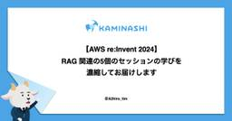

カミナシ エンジニアブログ
https://kaminashi-developer.hatenablog.jp/
株式会社カミナシのエンジニアが色々書くブログです
フィード

AWS 環境における Generative AI とセキュリティのジレンマ 28
28
カミナシ エンジニアブログ
どうもセキュリティエンジニアリングの西川です。 寒いのは好きではないのですが、寒くなってくると猫が布団に入ってくるので最高です。 ラスベガスで開催された AWS re:Invent 2024 に参加していました。 その中でも Generative AI を利用したセキュリティ対策やその他もろもろ便利機能が共有されていました。 これは当然と言えば当然で、セキュリティエンジニアは市場に少ないですし、セキュリティエンジニアの中でもスキルが十分に足りていないといったことも考えられ、それを補うためにGenerative AI を使いましょうという流れは自然だと思います。 セキュリティへの Generat…
3日前

【AWS re:Invent 2024】セッション以外ってどんな感じ？ (*遊んでません) 10
カミナシ エンジニアブログ
こんにちは、「カミナシ 従業員」開発チームの a2 (@Atsuhiro_tim) です。 re:Invent については、弊社含め多くの企業のセッションレポートを目にしていることと思います。 re:Invent は新サービス発表のある基調講演や、実際に手を動かしてサービスを触れるセッションへの参加などがメインコンテンツですが、ラスベガスに一週間滞在する間、それらが全てではありません。異国に行くこと自体や、セッション以外にも面白いアクティビティなどがあります。 今回は、そういったセッション以外の側面にスポットを当ててみたいと思います。ゆるい記事なので、すきま時間に読んでいただければと思います。…
3日前

【AWS re:Invent 2024】RAG 関連の5個のセッションの学びを濃縮してお届けします 65
カミナシ エンジニアブログ
こんにちは、AWS re:Invent から帰国した a2 (@Atsuhiro_tim) です。すき家がサラダをつけても $5 で、その美味しさと安さに涙を流しています。 さて、AWS re:Invent 2024 のセッションカタログを見ると、今年も GenAI が猛威を振るっていたことがわかります。 昨年は Gen AI x 〇〇 が多かったのですが、今年は一歩進んで、 RAG x 〇〇 や Agent x 〇〇 が出てきました。RAG については機能リリースのニュースは認識していたものの、実際に触ることがなかったので、今回の re:Invent で Gen AI や RAG 関連のセッ…
7日前

【AWS re:Invent 2024】Amazon S3 Metadata と Amazon S3 Table Bucket は名前だけ見ると誤解しそうなので整理しました
カミナシ エンジニアブログ
はじめに こんにちは、「カミナシ 従業員」開発チームの a2 (@Atsuhiro_tim) です。5日間の AWS re:Invent を終え、帰国しました。 今年の re:Invent は Amazon S3 Table Bucket, Amazon S3 Metadata という新機能が発表されましたね。 Amazon S3 Table Bucket というサービス名を聞いた時、「Relational Database インターフェースのプロビジョニング不要の DB（主に OLTP 用）で、個人開発サービスに使える？」や、「S3 の csv ファイルに対して Athena を経由せずに …
10日前
【AWS re:Invent 2024】Generative AIによる未来のUXの広がりを感じた
カミナシ エンジニアブログ
manatyです。AWS re:Inventの生成AIによる検索機能の拡張ワークショップを通じて、ID管理の未来を想像してみました。
11日前
【AWS re:Invent 2024】Claude 3.5 の工夫
カミナシ エンジニアブログ
はじめに こんにちは、「カミナシ 従業員」サービスチームの a2 (@A2hiro_tim) です。ラスベガスで開催されているAWS re:Invent 2024 に昨年に引き続き参加しています。今回は ChalkTalk として開催された「Deep dive into Claude 3.5: Unlocking AI potential on AWS」の参加レポートをお届けします。 ChalkTalk は speaker によって形式に差がありますが、今回のセッションは Claude 3.5 の仕組みをスピーカーがひたすら話す形式で、最後に Amazon Bedrock を利用したデモがある…
12日前
【AWS re:Invent 2024】Generative AIを利用したこれからのセキュリティ対策に足を踏み入れてみた
カミナシ エンジニアブログ
AWS re:Inventのセッションレポートです。生成AIを使ってセキュリティ業務の生産性を向上させるアイデアを紹介するセッションを聞いて、やってみたことを書きました。
13日前
【AWS re:Invent 2024】人の労力を減らす、Amazon Bedrock Agents によるイベントドリブンエージェント作成を体験してきた
カミナシ エンジニアブログ
はじめに カミナシでソフトウェアエンジニアとしてサービスの開発をしている Taku (X アカウント) です。 ラスベガスで開催されている AWS re:Invent に2年振り2回目の参加をしています。 その中で役立ちそうなワークショップに参加することが出来たので、今回はそのご紹介をさせていただきたいと思います。 公開されているワークショップのリンクも載せているため、最後までご覧いただけると幸いです。 参加したワークショップ 今回参加したのは「Automating technical support and workflows with Amazon Bedrock Agents」というワー…
14日前
【AWS re:Invent 2024】Amazon Verified Permissionsを本番適用した人のリアルな声を聞いた
カミナシ エンジニアブログ
はじめに カミナシでID管理・認証基盤を開発しているmanaty（@manaty0226）です。ラスベガスで開催されているAWS re:Invent 2024に初めて参加しています。今回はブレイクアウトセッションで開催された「Securing 50 million requests per month with AWS-based authorization」を聴講したレポートをお届けします。 Amazon Verified Permissions（AVP）とは Amazon Verified Permissions（AVP）はアプリケーションのアクセス制御を行うためのAWSサービスであり、O…
14日前
【AWS re:Invent 2024】テナント分離の考え方を整理したらRFC 8693に辿り着いた
カミナシ エンジニアブログ
re:Inventに参加中のmanatyです。今回はテナント分離に関するセッションを聞いてアーキテクチャを整理した内容を書いています。
15日前
AWS アクセス管理を一歩先へ！カミナシのセキュアな AWS アクセス管理を実現するシステムの紹介
カミナシ エンジニアブログ
カミナシのエンジニアリング組織では、チームメンバーの AWS アカウント環境への定常的なアクセス権限として「センシティブな情報を除いた全リソースへの ReadOnly Access」を付与しており、一方で書き込み権限については必要に応じてメンバーが一時的に権限を獲得できる仕組みとシステムを開発し、運用を行っています。 本記事では、そういった仕組みを開発するに至った経緯や仕様、そしてこれを数ヶ月ほど運用した結果と今後の展望について紹介します。 このシステムは『ハマヤン』という名前で呼ばれていますが、あまねくユーザーに愛される素敵な名称であり、Sec Eng チーム内でも大人気です。開発者が濱野さ…
16日前
【AWS re:Invent 2024】コンテナセキュリティの近未来？を見た
カミナシ エンジニアブログ
AWS re:Inventのセッションレポートです。コンテナアプリケーションのCI/CDパイプラインにSBOMの生成とビルド生成物の署名と検証を組み込むワークショップに参加しました。
16日前
【AWS re:Invent 2024】耐障害性を高めるCell-based Architectureを体験してきた
カミナシ エンジニアブログ
AWS re:Invent 2024のセッションレポートです。Cell-based architectureと呼ばれる高いスケーラビリティと耐障害性を持つシステムアーキテクチャのハンズオンワークショップに参加した内容です。
16日前
エンジニア開発合宿2024を開催しました！
カミナシ エンジニアブログ
こんにちは！カミナシで Engineering Manager をしております Keeth こと桑原です．今年もカミナシ社で11/14-15 の２日間，開発合宿を開催しましたので今回はそのレポートとなります！ 開催概要 日程：11月14日 12:30 〜 11月15日 15:30 場所：熱海 参加者：エンジニア21名（内，リモート参加者2名） ※カミナシに在籍しているエンジニアは合計30名ちょっといます 今回の開発合宿のコンセプトとしては， チームを超えた交流・親睦を深めることでお互いを知る としました． 現在のカミナシはマルチプロダクト戦略に舵を切っており，プロダクト毎にチームがパキッと分か…
17日前
AWS 初学者にもオススメ AWS Jam / GameDay
カミナシ エンジニアブログ
はじめに カミナシでソフトウェアエンジニアをしている Taku(X アカウント)です。 カミナシではプロダクトのインフラに AWS を利用しているのですが、その学習の一環として AWS が主催するイベントに業務時間を利用して参加させていただいてます。 今年は AWS Jam / GameDay というイベントに計3回参加してみて、学びが多いイベントと感じたため共有させていただきたいと思います。 参加したイベント 2024/6/20：AWS Jam（in AWS Summit Japan） 2024/6/21：AWS GameDay（in AWS Summit Japan） 2024/8/26：…
20日前
AWS WAFがあれば安心!? 甘い! 甘すぎる!!「第2回ごーとんカップ」開催 - 次のカミナシセキュリティチャンピオンは誰だ!?
カミナシ エンジニアブログ
初めまして！10 月にカミナシへ入社した いちび(@itiB_S144) です。セキュリティエンジニアリングユニットに所属しつつ、8 月にリリースしたばかりの カミナシ従業員 の開発に携わっています。 先日社内エンジニア向けのセキュリティ競技会「第 2 回ごーとんカップ」を開催しました。ごーとんカップとは、社内のエンジニアが集まって CTF（Capture The Flag） 形式でセキュリティに関する問題、カミナシの開発に関わる問題を一人ひとりが解いて得点を競う大会です。CTFとは、セキュリティなどに関する問題を解いて隠されたキーワード（フラグ）を取得する競技です。 今回は、その運営を担当し…
21日前
Web Application のテストを runn で書いて、開発と価値提供を加速する
カミナシ エンジニアブログ
こんにちは、「カミナシ 従業員」サービスチームのソフトウェアエンジニアの a2 (A2hiro_tim) です。 早速ですが、ウェブアプリケーション開発、特に Go 言語を使っている方は、テストをどのように書いていますでしょうか。 我々のチームはバックエンドに Go を採用しており、 Table Driven Test （以下 TDT ）を使っていました。Go を採用した開発では TDT が広く採用されており、我々も慣習に則るのが最善だと判断したからです。 しかし実際に開発を進めると、ことウェブアプリケーション開発における TDT にはいくつか課題を感じるようになりました。そこで我々のチームで…
24日前
OAuth mTLSを実現するためにAWSでできること、できないこと
カミナシ エンジニアブログ
AWS上で構築したOAuth認可サーバーにてOAuth mTLSを実現するときの各種AWSサービスの仕様制約の整理と、技術制約およびRFCから導き出される妥当な設計仕様案の検討内容を書いています。
1ヶ月前
Fargate Spot が Arm アーキテクチャに対応！ シュッと移行してコスト削減を実現
カミナシ エンジニアブログ
先月ついに Arm アーキテクチャでも Fargate Spot が使えるようになりました！ さっそく社内向けの環境を Fargate Spot にシュッと移行したので、手順と注意点をご紹介します。
2ヶ月前
AWS WAF を COUNT モードで動かしたはいいが、その後どうすればいいんだっけ？
カミナシ エンジニアブログ
どうも Security Engineering の西川です。好きなポケモンはクワッスです。カミナシ社内に遂にポケモンカード部ができまして、部員同士切磋琢磨し始めています。いつか企業対抗ポケモンカード大会をするのが夢です。 さてさて、皆さんは AWS WAF（Web Application Firewall、以下 WAF）を使っていますか？サービスに WAF を導入する際は一定期間 COUNT モードで運用することがセオリーとされています。では、COUNT モードから BLOCK モードに切り替える時に何をもって BLOCK モードへの切り替えを判断していますか？ 本記事はつい先日リリースされ…
3ヶ月前
円安を乗り越えるための Arm アーキテクチャへの移行が完了！ そのプロセスを公開します
カミナシ エンジニアブログ
Graviton プロセッサに置き換えると月々のコストをグッと押し下げることができるため、今年の 1 月頃から RDS と ECS の Arm アーキテクチャへの移行を始めました。今回はどのように進めてきたのかをご紹介します。
3ヶ月前
監視ツールを迷ったら CloudWatch から始めてみるのもありなのでは
カミナシ エンジニアブログ
こんにちは、新規プロダクトの開発をしています、a2 （@A2hiro_tim ）です。 昨日、開発してきたプロダクトについて、正式リリースを発表させていただきました 🎉 prtimes.jp employee.kaminashi.jp さて、新規プロダクトの立ち上げは、技術選定や運用ツールの自由度が高く、どの監視ツールを使うか、選択に迷うこともあると思います。 我々のチームでは複数ツールの使用経験はあるものの、特定のツールの導入経験や深い知見があるメンバーはいなかったので、フラットに比較検討し、 Amazon CloudWatch の利用から始めてみよう、と意思決定しました。 主な選定理由は、…
4ヶ月前
開発生産性 Conference 2024 で登壇してきました。
カミナシ エンジニアブログ
どうもセキュリティエンジニアリングの西川です。 先日、株式会社Flatt Security のCCO豊田さんにお誘いいただき、カミナシのセキュリティの取り組みや開発生産性をどのように考えているかをファインディ株式会社主催の開発生産性Conference 2024 にてお話させていただきました。 当日の資料は下記です。 speakerdeck.com ※自動でライトがつく OR 無灯火を知らせるのページで左側の運転手が寝ていますがそれに意味はありません どういうことを話したか ざっくりですが、下記のような話をしました カミナシのサービスのセキュリティのオーナーシップは開発者が持っている セキュリ…
5ヶ月前
とあるプロダクトのエンジニアチームにKRとしてコード変更行数の変動係数を導入して強いチームを目指した話
カミナシ エンジニアブログ
はじめに こんにちは！社内の「エンジニアブログの更新を絶やさない会」の方から圧を激を貰っている Keeth こと桑原です！現在はEngineering Manager の見習いをしております． 私が所属しているサービスの開発運用に携わるチーム(Eng + PM + PD で構成。以下「サービスチーム」)では，OKR（目標と成果指標）を設定して取り組んでいます．本記事では， KR に盛り込んだ「変動係数」というあまり聞き慣れない指標を導入してみた感想や，その運用方法について振り返りたいと思います．他のエンジニアチームの運用の参考になれば幸いです． ※だいぶ文字文字しい記事になっています どのよう…
5ヶ月前
Object.keys() が返す配列の順序における数値キーの昇順には上限がある
カミナシ エンジニアブログ
はじめに こんにちは。昨年の10月にカミナシに入社したソフトウェアエンジニアの tokuse です。 気が付けば入社してから既に半年以上経っており、光陰矢の如しで驚愕しています！ カミナシではフロントエンドを TypeScript で開発しています。そんな中、先日 Object.keys() の仕様に起因する不具合が発生し、その際に Object.keys() が返す配列の順序に関する仕様について詳しく知りました。当稿ではその仕様について説明します（ECMAScript 最新前提です）。 はじめに 問題となった処理 Object.keys() の仕様 まとめ 余談 おわりに 問題となった処理 …
7ヶ月前
フロントエンドから Amazon S3 にマルチパートアップロードしたい
カミナシ エンジニアブログ
はじめに Presigned URL（*) などで、Amazon S3 へのアップロード処理を実装していると、大きなサイズのファイルをアップロードしようとしたときに、以下のような課題に直面することがあります。 一回のPUT リクエストでアップロードできるサイズの上限が 5GB まで 単一の HTTP リクエストでアップロードするため、大きなサイズをアップロードしようとしたときに問題が起きる。例えば、アップロードの処理の途中で失敗したとき、最初からやり直しになる。 このようなときに活用したいのが、マルチパートアップロードです。マルチパートアップロードとは、その名の通り、アップロード対象のオブジェ…
7ヶ月前
AWS のマルチアカウントにおける Security Hub の運用は Central configuration を使おう
カミナシ エンジニアブログ
どうもこんにちは西川です。AWS Community Builder に選ばれたからにはAWSのこともアウトプットしなきゃということで、今日は Security Hub の Central configurationの素晴らしさをお伝えしたいと思います。 Security Hub 運用の課題と Central configuration Cental configuration は re:Invent 2023 で発表された機能で、実は最近までこの機能が追加されていたことに西川は気づいておりませんでした（汗） でも、この機能はSecurity Hubを運用していくうえでは欠かせない機能で、それ…
8ヶ月前
カミナシにセキュリティエンジニアとしてジョインして1年の振り返り
カミナシ エンジニアブログ
息子に「お父さんカエルの匂いがする」と言われているセキュリティエンジニアリングの 西川です。カエルの匂いとはこれ如何に。。 カミナシに関わって1年経って 見出しで入社してではなく、関わってと表現したのは業務委託で関わり始めたのが去年の4月からだったからです。1年経って色々と今までの活動などの振り返りをしたいと思い筆を取りました。 そもそも振り返るきっかけとなったのは、IssueHunt 社のイベント（https://issuehunt.jp/seminar/lounge3）でプロダクトセキュリティについて話をする機会があったからです。できるだけ無意識下にあったものを言語化したいなと思いました。…
9ヶ月前
イベント参加レポート「TechBrew in 東京 〜mtx2sさんと考えるコード品質とビジネスインパクト〜」
カミナシ エンジニアブログ
こんにちは！ カミナシでエンジニアリングマネージャーとして働いております、吉永です。 先日、 3/21 に Findy さんが主催の「TechBrew in 東京 〜mtx2sさんと考えるコード品質とビジネスインパクト〜」というイベントに参加してきました。 findy.connpass.com イベントにブログライティング枠なるものがあったので、この枠での参加ではないものの、参加レポートを書いてみます。 動機 mtx2s さんの記事は以前から参考にさせていただくことが多くて、毎回首がもげそうになるくらいの共感や学びを得られていました。自分自身のマネジメントの参考にもしています。いつかお会いして…
9ヶ月前
Amazon S3 へのファイルアップロードで POST Policy を使うと、かゆいところに手が届くかもしれない
カミナシ エンジニアブログ
はじめに こんにちは。カミナシでソフトウェアエンジニアをしている佐藤です。 みなさんは、アプリケーションのフロントエンドから、Amazon S3 にファイルをアップロードするときに、どのような方法を用いているでしょうか？ 「バックエンドのサーバーにファイルを送信し、バックエンドのサーバー経由で S3 にアップロードしている」「Presigned URL を払い出して、フロントエンドから直接 PUT している」など、いくつかの方法があると思います。 弊社で提供しているサービス「カミナシレポート」でも、用途に応じて上記の方法を使い分けて S3 へのファイルのアップロードを行っています。 特に、Pr…
10ヶ月前